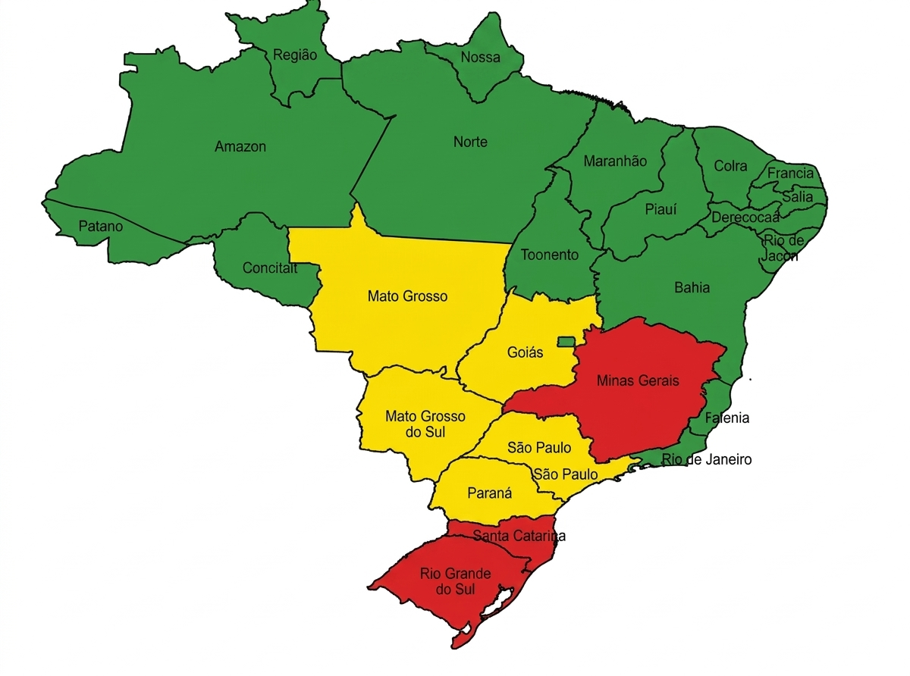

Correntes de vento e densidadade de poluentes registrados por satélite.A qualidade do ar é satisfatória e apresenta pouca ou nenhuma desvantagem.
Pessoas sensíveis (crianças e idosos) podem apresentar sintomas respiratórios leves.
Evite exercícios ao ar livre prolongados. Recomenda-se uso de proteção em áreas afetadas.